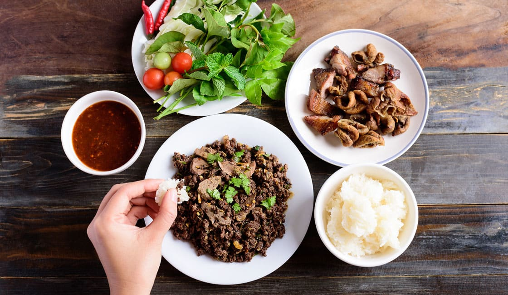
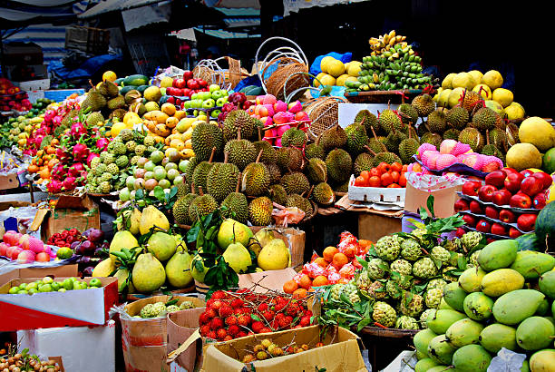

Food & Lodging
Restaurants
Taniti currently has 10 restaurants: five serve mostly local fish and rice, three serve American-style meals, and two serve Pan-Asian cuisine.

Grocery Stores
Taniti has two supermarkets, two smaller grocery stores, and one convenience store that is open 24 hours a day.

Lodging
Taniti has a wide variety of lodging that ranges from an inexpensive hostel to one large, four-star resort. There are many small, family-owned hotels and a growing number of bed and breakfasts. All types of lodging are strictly regulated and regularly inspected by the Tanitian government.